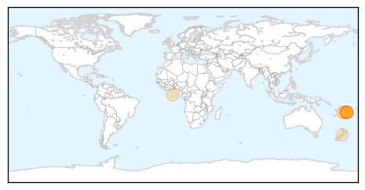

30 Day Trends
Web: 3 alerts, 6 warnings
Twitter: 0 alerts, 0 warnings
Top Articles:
- 0.988
- Three people have died of dengue fever in Fiji
- 0.944
- Authorities Deploy Resources to Curb Dengue Fever - Fiji
- 0.908
- Strain returns to haunt
- 0.878
- Fiji Times Online
- 0.842
- Correction: Fiji government provides dengue updates
- 0.808
- Health security effort to boost global disease response
- 0.806
- Council steps up fight
- 0.662
- No reports from visitors
Top Tweets:
-
No tweets found for Feb 20, 2014
Web/News Articles
Tweets

Article Locations
Article Confidences